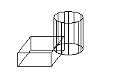

Once you have created a solid, you can create more complex shapes by combining solids.
You can join solids, subtract solids from each other, or find the common volume (overlapping portion) of solids. Use the Boolean or CheckInterference method to perform these combinations.

Solids are further modified by obtaining the 2D cross section of a solid or slicing a solid into two pieces. Use the SectionSolid method to find cross sections of solids, and the SliceSolid method for slicing a solid into two pieces.
This example creates a box and a cylinder in model space. It then finds the interference between the two solids and creates a new solid from that interference. For ease of viewing, the box is colored white, the cylinder is colored cyan, and the interference solid is colored red.
Sub Ch8_FindInterferenceBetweenSolids()
' Define the box
Dim boxObj As Acad3DSolid
Dim length As Double
Dim width As Double
Dim height As Double
Dim center(0 To 2) As Double
center(0) = 5: center(1) = 5: center(2) = 0
length = 5
width = 7
height = 10
' Create the box object in model space
' and color it white
Set boxObj = ThisDrawing.ModelSpace. _
AddBox(center, length, width, height)
boxObj.Color = acWhite
' Define the cylinder
Dim cylinderObj As Acad3DSolid
Dim cylinderRadius As Double
Dim cylinderHeight As Double
center(0) = 0: center(1) = 0: center(2) = 0
cylinderRadius = 5
cylinderHeight = 20
' Create the Cylinder and
' color it cyan
Set cylinderObj = ThisDrawing.ModelSpace.AddCylinder _
(center, cylinderRadius, cylinderHeight)
cylinderObj.Color = acCyan
' Find the interference between the two solids
' and create a new solid from it. Color the
' new solid red.
Dim solidObj As Acad3DSolid
Dim bSolidsInterfere As Boolean
Set solidObj = boxObj.CheckInterference(cylinderObj, True, bSolidsInterfere)
solidObj.Color = acRed
ZoomAll
End SubThis example creates a box in model space. It then slices the box based on a plane defined by three points. The slice is returned as a 3DSolid.
Sub Ch8_SliceABox()
' Create the box object
Dim boxObj As Acad3DSolid
Dim length As Double
Dim width As Double
Dim height As Double
Dim center(0 To 2) As Double
center(0) = 5#: center(1) = 5#: center(2) = 0
length = 5#: width = 7: height = 10#
' Create the box (3DSolid) object in model space
Set boxObj = ThisDrawing.ModelSpace. _
AddBox(center, length, width, height)
boxObj.Color = acWhite
' Define the section plane with three points
Dim slicePt1(0 To 2) As Double
Dim slicePt2(0 To 2) As Double
Dim slicePt3(0 To 2) As Double
slicePt1(0) = 1.5: slicePt1(1) = 7.5: slicePt1(2) = 0
slicePt2(0) = 1.5: slicePt2(1) = 7.5: slicePt2(2) = 10
slicePt3(0) = 8.5: slicePt3(1) = 2.5: slicePt3(2) = 10
' slice the box and color the new solid red
Dim sliceObj As Acad3DSolid
Set sliceObj = boxObj.SliceSolid _
(slicePt1, slicePt2, slicePt3, True)
sliceObj.Color = acRed
ZoomAll
End Sub